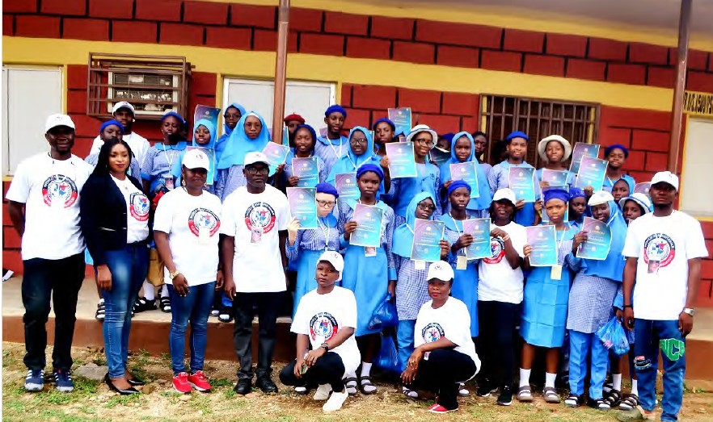
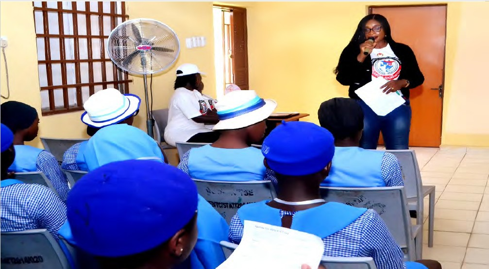
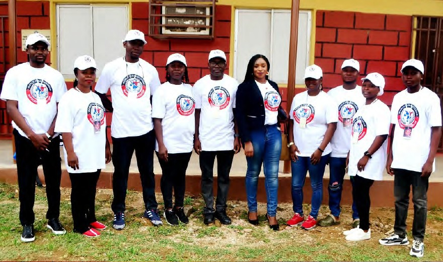
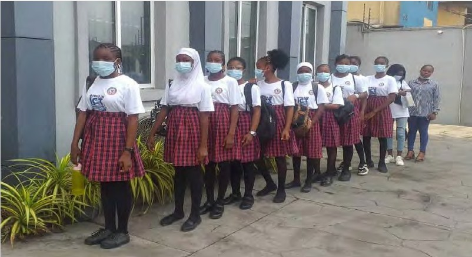
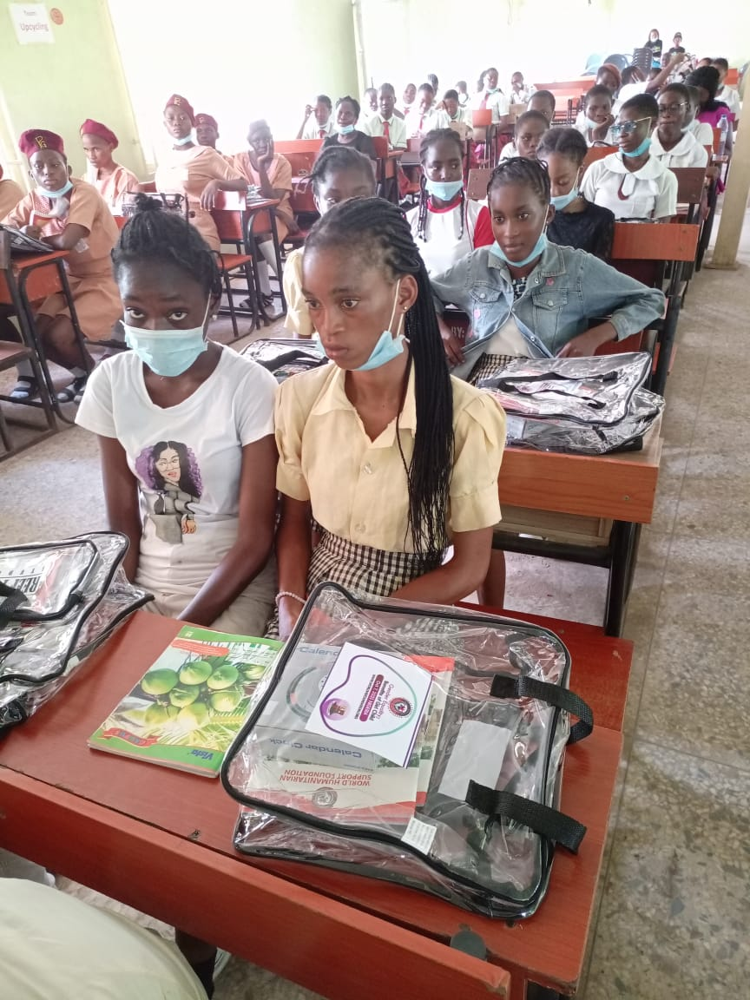
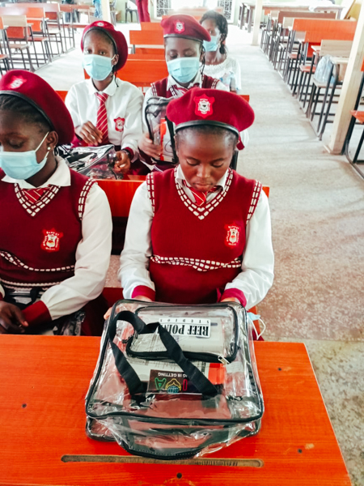
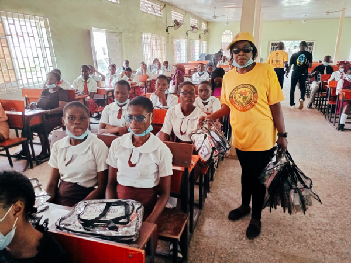

Robotics & Drone Technology
Hands-on demonstrations, safe equipment practice and guided projects introduce automation, flight technology, engineering thinking and real-world problem-solving.
STEM · Robotics · Drones · Digital Skills
Practical technology experiences help girls build confidence, understand engineering and imagine themselves as creators. WHSF connects robotics, drone technology, ICT learning and mentorship to pathways back into education and opportunity.

One connected STEM pathway
The programme brings technology closer to girls and young women through three connected pathways.
Hands-on demonstrations, safe equipment practice and guided projects introduce automation, flight technology, engineering thinking and real-world problem-solving.
Safe, supportive learning spaces build computer confidence, digital literacy, teamwork and the foundations girls need to participate in advanced STEM opportunities.
Women mentors, facilitators and professionals provide leadership, career visibility, encouragement and networks that help learners see a place for themselves in technology.
From exposure to opportunity
WHSF uses robotics and drone technology to engage rural, underserved and out-of-school girls. Demonstrations, digital learning, mentorship and practical activities turn curiosity into a reason to return, participate and keep building.
Programme gallery
Learning, mentorship, recognition and community outreach create a complete pathway around every participant.








Community impact through technology
WHSF introduces drone technology as a practical bridge between curiosity, education and opportunity for girls in rural communities.
Through demonstrations, hands-on learning, entrepreneurship exposure and mentorship, WHSF encourages un-educated and out-of-school girls to return to learning, build digital confidence and see a future for themselves in STEM, enterprise and meaningful work.
Community impact through technology — WHSF Drone Tech Programme
Technology for education, confidence and opportunity
Build the next pathway
Partner with WHSF to support learning labs, robotics and drone equipment, school clubs, TechWomen mentors, excursions and community outreach.